📋Assessments
Published tests, blank copies only.
Beery VMI
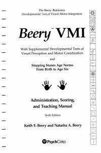
Beery VMI manual Visual-motor integration. Full manual, scanned. PDF · 220 pages · 14.1 MB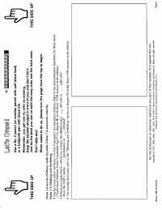
Beery VMI forms Full form booklet, blank. PDF · 16 pages · 2.9 MBPeabody Developmental Motor Scales (PDMS-2)
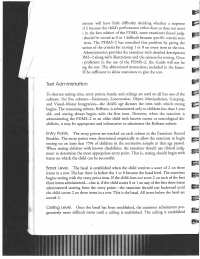
Peabody manual Scanned excerpt of the manual. PDF · 36 pages · 3.6 MB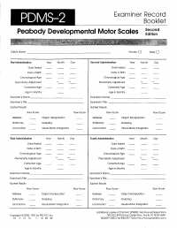
PDMS-2 Examiner Record Booklet Peabody Developmental Motor Scales, 2nd edition. Blank. PDF · 28 pages · 1.6 MB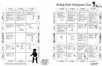
Peabody Motor Development Chart Pro-Ed chart, ages 0 to 72+ months. PDF · 1 pages · 0.2 MBSensory Profile 2
SB Sensory Symptoms Checklists
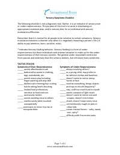
SB Sensory Symptoms Checklist, parent version PDF · 4 pages · 0.1 MB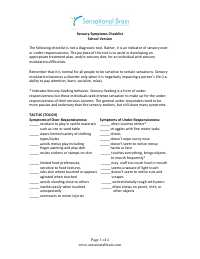
SB Sensory Symptoms Checklist, school version PDF · 4 pages · 0.1 MBSensory Processing Measure
Your forms
Primitive reflexes
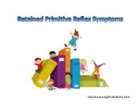
Primitive Reflex Checklist SolveLearningDisabilities.com. PDF · 6 pages · 0.8 MB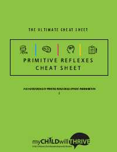
Primitive Reflexes Cheat Sheet Quick reference of reflex development. PDF · 3 pages · 0.4 MB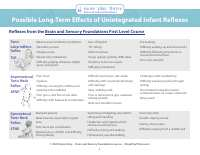
Possible long-term effects of unintegrated infant reflexes Move Play Thrive, Brain and Sensory Foundations. PDF · 6 pages · 0.9 MB🎓In-Services
Your own presentations and the materials from them.
Executive function
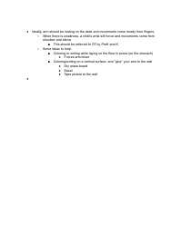
In Service notes, Feb 11 2022 One page of tips, such as arm on the desk and writing on a vertical surface. PDF · 1 pages · 0.0 MBBrain breaks
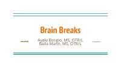
Brain Breaks slides Slides. PDF · 17 pages · 2.1 MB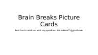
Brain Breaks picture cards Cards to print. PDF · 18 pages · 1.8 MB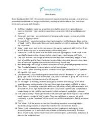
Brain Breaks list for teachers Two-page list. PDF · 2 pages · 0.1 MBSensory
Hands-on classroom
💌Parent Handouts
Handouts to give to parents.
Sensory
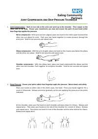
Joint compression and deep pressure technique PDF · 2 pages · 0.6 MB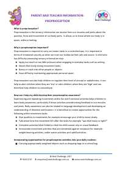
Proprioception, parent and teacher information PDF · 3 pages · 0.2 MB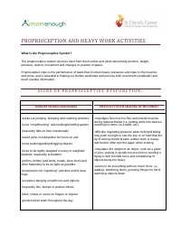
Proprioception and heavy work activities PDF · 3 pages · 0.1 MB The 8 sensory systems Growing Hands-On Kids. PDF · 9 pages · 0.3 MBReflexes and development
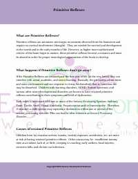
What are primitive reflexes PDF · 10 pages · 0.2 MB Developmental milestones, ages 0 to 6 PDF · 5 pages · 0.9 MBMovement
✏️Worksheets and Activities
By type. Age is shown only where the sheet states it.
Writing
Visual perception
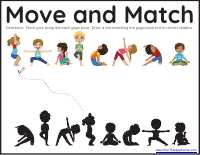
Move and Match yoga Match each pose to its shadow. PDF · 1 pages · 0.6 MB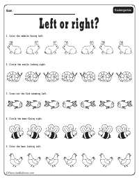
Left or right? Color and circle items facing left or right. PDF · 2 pages · 0.3 MB · Kindergarten (printed on the sheet)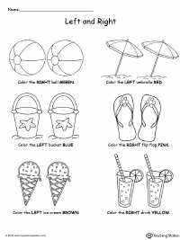
Summer items, left and right position Color the left or right item. PDF · 1 pages · 0.7 MBMotor control
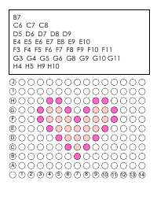
Bubbles, heart Sample to copy. PDF · 1 pages · 0.0 MB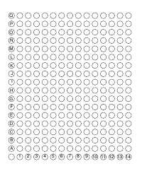
Bubbles, blank grid Blank grid to copy it onto. PDF · 1 pages · 0.0 MBGross motor, movement and yoga
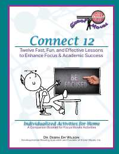
S'cool Moves Connect 12 posters PDF · 32 pages · 8.0 MB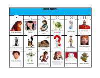
Hero Moves gross motor activity PDF · 1 pages · 0.6 MB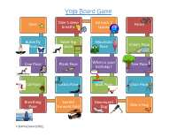
Yoga Gameboard PDF · 1 pages · 0.6 MB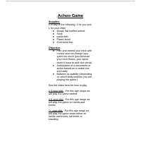
Achoo Game From the Teletherapy and Kids Yoga webinar. PDF · 2 pages · 0.0 MB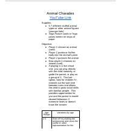
Animal Charades From the Teletherapy and Kids Yoga webinar. PDF · 2 pages · 0.0 MB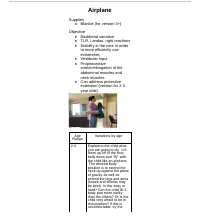
Airplane From the Teletherapy and Kids Yoga webinar. PDF · 2 pages · 0.4 MB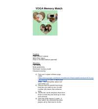
Yoga Memory Match From the Teletherapy and Kids Yoga webinar. PDF · 2 pages · 0.9 MB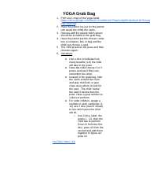
YOGA Grab Bag From the Teletherapy and Kids Yoga webinar. PDF · 2 pages · 0.4 MB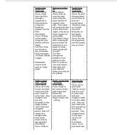
Grab Bag Exercises From the Teletherapy and Kids Yoga webinar. PDF · 3 pages · 0.1 MB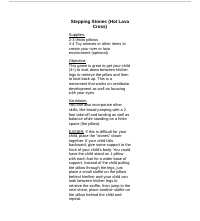
Stepping Stones (Hot Lava Cross) From the Teletherapy and Kids Yoga webinar. PDF · 2 pages · 0.0 MB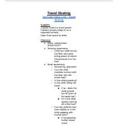
Towel Skating From the Teletherapy and Kids Yoga webinar. PDF · 2 pages · 0.0 MB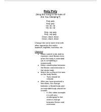
Roly Poly From the Teletherapy and Kids Yoga webinar. PDF · 2 pages · 0.0 MB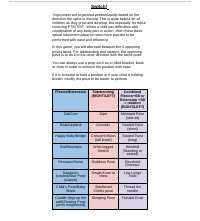
Switch! From the Teletherapy and Kids Yoga webinar. PDF · 2 pages · 0.1 MB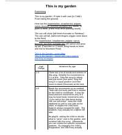
This is my garden From the Teletherapy and Kids Yoga webinar. PDF · 2 pages · 0.0 MB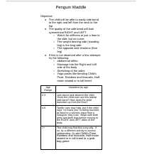
Penguin Waddle Song From the Teletherapy and Kids Yoga webinar. PDF · 2 pages · 1.1 MB Yoga notes - Sun Salutation From the Teletherapy and Kids Yoga webinar. PDF · 2 pages · 0.3 MB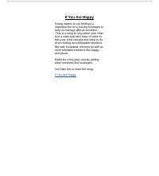
If you are happy - song From the Teletherapy and Kids Yoga webinar. PDF · 1 pages · 0.0 MB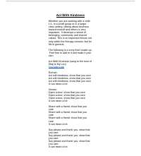
Act With Kindness From the Teletherapy and Kids Yoga webinar. PDF · 2 pages · 0.0 MB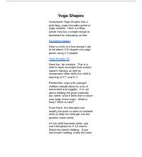
Yoga Shapes From the Teletherapy and Kids Yoga webinar. PDF · 2 pages · 0.0 MB Yoga Off of the Mat Activities From the Teletherapy and Kids Yoga webinar. PDF · 1 pages · 0.0 MB Yoga Toss From the Teletherapy and Kids Yoga webinar. PDF · 3 pages · 2.0 MB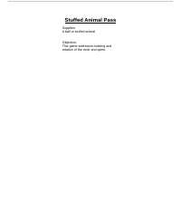
Stuffed Animal Pass From the Teletherapy and Kids Yoga webinar. PDF · 1 pages · 0.0 MB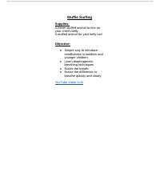
Stuffie Surfing From the Teletherapy and Kids Yoga webinar. PDF · 1 pages · 0.0 MB Treasure Hunt From the Teletherapy and Kids Yoga webinar. PDF · 1 pages · 0.0 MB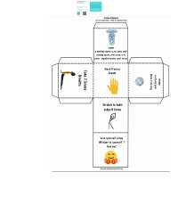
The Cube Game From the Teletherapy and Kids Yoga webinar. PDF · 2 pages · 0.2 MB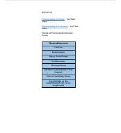
BONUS #1 From the Teletherapy and Kids Yoga webinar. PDF · 1 pages · 0.0 MB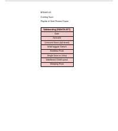
BONUS #2 From the Teletherapy and Kids Yoga webinar. PDF · 1 pages · 0.0 MB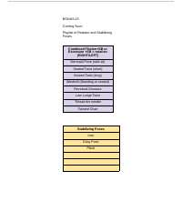
BONUS #3 From the Teletherapy and Kids Yoga webinar. PDF · 2 pages · 0.0 MBCalming and breathing
Social skills
🎬Courses
One section per course.
Consultative Model for Executive Function (Sensational Brain)
Sensational Brain, other courses
Theramoves webinars
Webinar handouts (Itta Weber)
Telehealth and Kids Yoga = Fun
Other courses
Baila Mann OT Resources · 99 files · made with ♥ for OTs, teachers and parents